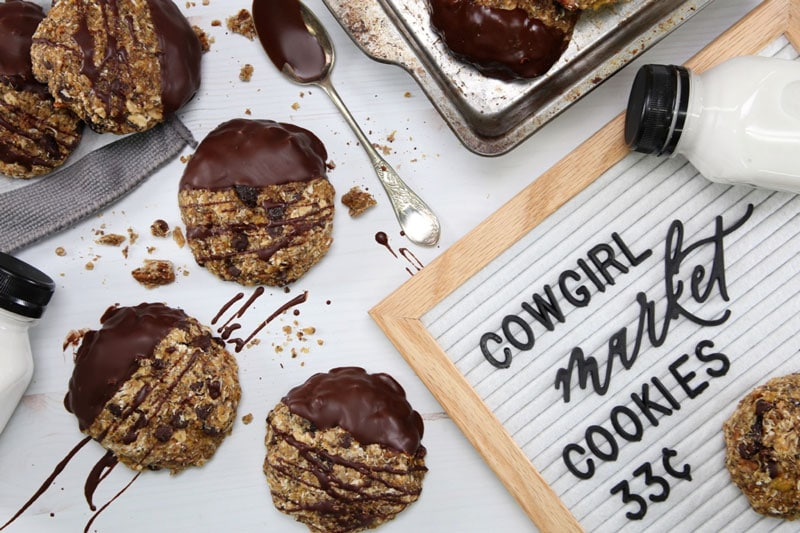
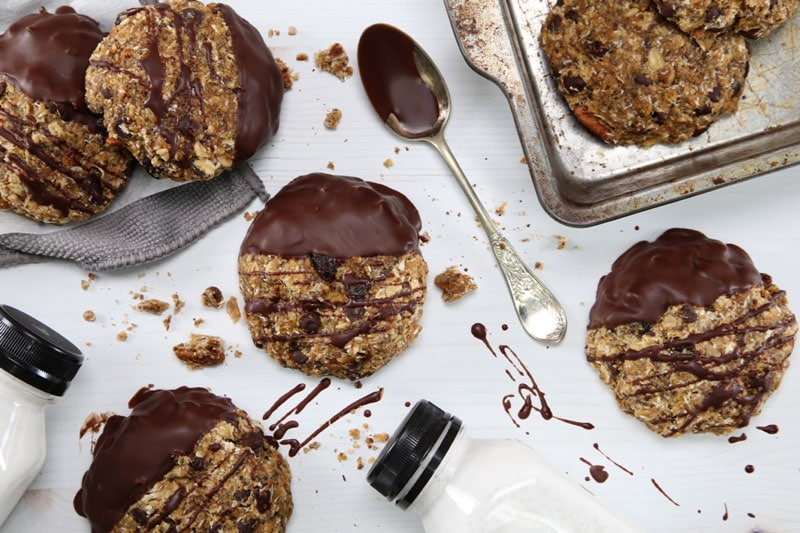
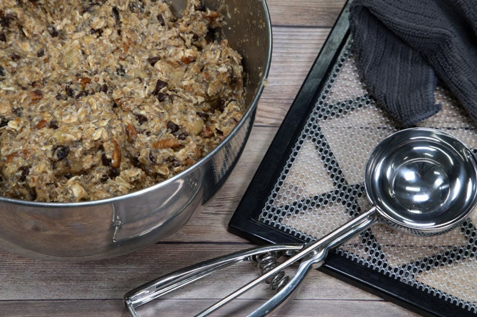
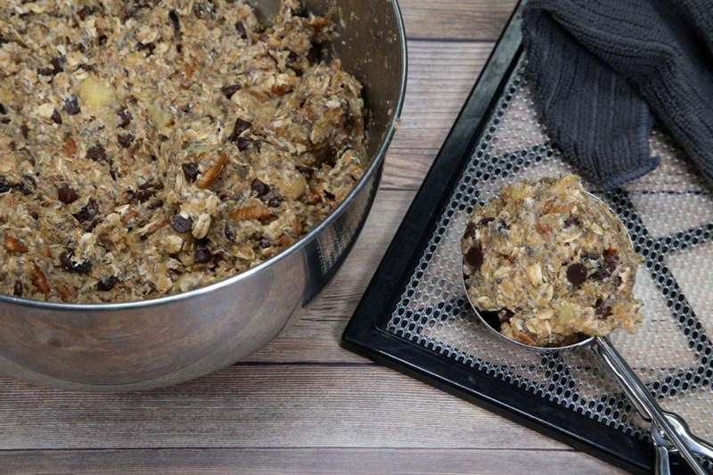
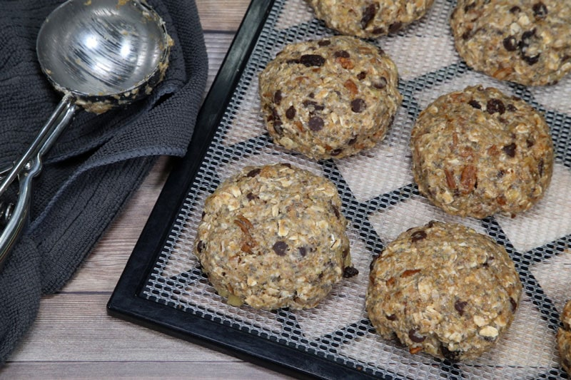

Cowgirl Market Cookies
– raw, vegan, gluten-free –
The Cowgirl Market Cookie (formally known as Cowgirls Gone Nuts Cookie) is a loaded cookie that will blow your hat off and cause you to yell, “YeeeeHaaaa!” I call it the one bowl wonder! Lasso yourself a large bowl, wrangle all the ingredients into the bowl, dive in with your hands, mix it up and presto…you have one nutty cowgirl!

Every bite you take of this cookie is fully loaded with flavor; oats, dates, coconut, pecans, banana, and chocolate. Where it lacks refined sugars, gluten, and dairy, it doesn’t lack flavor or nutrients. Throw a few of these here cookies in the saddlebag as you head out in the morning and add a little “spur” into your day.

These cookies freeze beautifully!. I wrapped each cookie individually in plastic wrap and then put them inside of a freezer Zip-lock plastic bag. My husband actually loved them right out of the freezer as well as being thawed at room temp. So make up a batch and place it in the freezer for those days that you need a quick fix! :)
I originally shared this recipe in 2011. Today, a gorgeous Fall day of 2018, I decided to update the recipe and photos.
 Ingredients:
Ingredients:
yields 14 (1/2 cup or 130 g) cookies
- 3/4 cup (90 g) ground flax (grind in coffee grinder)
- 1/4 cup (43 g) flax or chia seeds
- 1/2 cup (45 g) dried coconut flakes
- 1 cup (118 g) raw pecans, rough chopped
- 2 cups (190 g) gluten-free rolled oats
- 1/2 cup (80 g) Medjool dates (8), diced or raisins
- 1 cup (176 g) chocolate chips
- 2 tsp (6 g) ground Ceylon cinnamon
- 1/2 tsp (2 g) Himalayan pink salt
- 1 1/2 cups (320 g) water
- 1/2 cup (130 g) maple syrup
- 1/4 cup raw coconut butter, melted
- 2 bananas (225 g), ripe – sliced
Preparation:
- Combine ground flax, flax or chia seeds, coconut, pecans, oats, dried fruit, chocolate chips, cinnamon, and, salt together in a large bowl. Mix together.
- If using raw chocolate chips, you want to wait and press them into the cookies AFTER they have dehydrated. If you add them now, they will melt during the drying process.
- If you use vegan, store-bought chocolate chips, you can add them now.
- Add the water, maple syrup, coconut butter, and bananas to the dry ingredients. With your hands, squish everything together until well incorporated.
- Personally, I recommend removing any rings from your fingers, wash your hands, and dive in fingertips first! I found great, sticky pleasure in this! Mix the batter well. It is a bit sticky.
- Using a large cookie scoop, level off each scoop full, roll into a ball, slightly flatten, and place on the mesh sheet that comes with your dehydrator.
- Dehydrate at 145 degrees (F) for 1 hour. (set a kitchen timer so you don’t forget them at this high temp).
- Reduce temp to 115 degrees (F) and continue drying for approx. 6-10 hours.
- Dedicate one cookie to be your tester. Throughout the drying process, text the texture of the test cookie and stop the process when it reaches the level that you prefer. I like my cookies more on the moist side, whereas Bob likes them dried out more.
- Once cooled, store in an airtight container in the fridge or wrap individually in plastic wrap. Keeping them in the fridge will extend the shelf life of these moist cookies and slow the growth of bacteria.
- These will freeze well too!
- For an added flare, I dipped each half of the cookie into chocolate.
Culinary Explanations:
- Why do I start the dehydrator at 145 degrees (F)? Click (here) to learn the reason behind this.
- When working with fresh ingredients it is important to taste test as you build a recipe. Learn why (here).
- Don’t own a dehydrator? Learn how to use your oven (here). I do however truly believe that it is a worthwhile investment. Click (here) to learn what I use.

Have two dehydrator trays ready for action. Things are about to get sticky.

I LOVE using ice cream/cookie scoops. This particular one is 1/2 cup measurement. It makes for a large, hardy cookie. Feel free to use any size.

You can make the cookies as thick or thin as you want them. Pop in the dehydrator for 1 hour at 145 degrees (F), then reduce to 115 degrees (F) until the right texture is reach for your liking.
© AmieSue.com